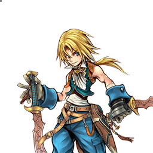
Final Fantasy IX
Zidane Tribal
Rushdown aérien fragile, spécialiste des HP links et des combos assist
Position dans la méta
Tier A+ 7ᵉ sur 30 — tier list tournoi 2017 de dissidia.wiki (moitié valeurs de matchups, moitié avis de joueurs experts).
Zidane est classé 7e (tier A+) de la tier list 2017. L'overview le décrit comme historiquement classé haut de tableau, avec un gameplan constant et efficace en tournoi et un moveset assez simple à prendre en main pour un joueur intermédiaire.
Vue d'ensemble
Zidane est un combattant agile de corps à corps qui évolue principalement dans les airs. Sa stratégie centrale consiste à se rapprocher de l'adversaire et à le toucher avec l'un de ses HP links pour lancer des combos assist. Sa mobilité est excellente grâce à son dash et à ses sauts aériens, qu'il exploite confortablement pour poke avec Swift Attack et Scoop Art. Il peut aussi initier l'offense depuis des angles verticaux difficiles à contester.
Ce qui le distingue vraiment, c'est sa synergie avec les builds Side by Side à haute bravery de base et l'assist Aerith. Grâce à son HP link Meo Twister et aux setups Shift Break, Zidane remplit rapidement sa jauge d'assist sur une seule bonne lecture et peut tout dépenser dans des combos très destructeurs : avec deux jauges d'assist et un build adapté, il inflige plus de 6000 dégâts HP en un seul combo, et de façon constante en l'air dès qu'il est près d'un mur ou d'un plafond. Son wall carry au-dessus de la moyenne avec les HP links soutient ce plan. Zidane fait ses plus gros coups au corps à corps, mais il sait aussi temporiser en défense et repartir sur une ouverture claire.
En contrepartie, son plan sûr et explosif a un coût. Sa DEF de base est basse : les builds orientés dégâts détruisent sa bravery. S'il court vite, il lui manque un poke sûr et rapide au sol : son jeu au sol est plus engagé et à potentiel limité (Tidal Flame contrôle l'espace, Booster 8 peut contrer avec sa priorité Melee Mid, mais les deux ont un startup relativement long). Ses dégâts de base et son ATK sont faibles, il manque d'attaques fiables pour le Wall Rush, et la génération d'EX de ses coups clés est basse — ses combos assist dépassent largement son gain d'EX. Enfin, Swift Attack et Tempest passent par un long enchaînement avant le HP link Meo Twister, ce qui est vulnérable aux contres par Assist Change, surtout à haut niveau. Plus glass cannon qu'all-rounder : il brille quand il réussit, mais souffre beaucoup quand il échoue.
Forces
- Grande mobilité aérienne (dash rapide, sauts aériens) et offense possible depuis des angles verticaux difficiles à contester.
- Pokes efficaces à bout portant (Swift Attack) comme à longue portée (Scoop Art, Shift Break).
- HP links (Meo Twister) qui lancent des combos assist très rentables.
- Synergie remarquable avec les builds Side by Side à haute bravery de base et l'assist Aerith : plus de 6000 dégâts HP en un combo à deux jauges, de façon constante près des murs et plafonds.
- Wall carry au-dessus de la moyenne grâce aux HP links.
- Difficile à whiff punir ; capable de jouer défensif et de repartir sur une ouverture claire.
- Gameplan reconnu comme constant et efficace en tournoi.
Faiblesses
- DEF de base basse : les builds dégâts détruisent sa bravery.
- Pas de poke sûr et rapide au sol ; jeu au sol plus engagé et limité (startup long de Tidal Flame et Booster 8).
- ATK et dégâts de base faibles, peu d'attaques fiables pour le Wall Rush.
- Génération d'EX basse sur ses coups les plus importants ; ses combos assist dépassent vite son gain d'EX.
- Les enchaînements de Swift Attack et Tempest vers Meo Twister sont vulnérables aux contres par Assist Change, surtout à haut niveau.
- Peine à créer de l'offense contre les personnages à forte area denial (The Emperor) et à appliquer des mixups sur les blocks à distance.
Stats & vitesses
| Nom | Zidane Tribal (ジタン・トライバル) |
|---|---|
| Jeu d'origine | Final Fantasy IX |
| ATK de base (LV100) | 108 (Very Low) |
| DEF de base (LV100) | 110 (Low) |
| Vitesse de course | 4 (Fast) |
| Vitesse de dash | 73 (Fast) |
| Vitesse de chute | 81 (Average) |
| Chute après esquive | 18 (Very Fast) |
| BRV la plus rapide | 13F (Swift Attack) |
| HP la plus rapide | 25F (Free Energy) |
| HP en 1 coup | Yes (Free Energy, Tidal Flame projectile) |
| HP links | Yes |
| Command block | No |
| Armes | Daggers, Thrown Weapons, Parrying Weapons, Swords, Poles |
| Armures | Bangles, Gauntlets, Hats, Hairpins, Clothing,Light Armor, Headbands, and Chestplates |
| Armes exclusives | Sargatanas, The Tower, Ozma's Splinter |
| Unlock | Default |
| Camp | Cosmos |
| Doubleur (JP) | Romi Park |
| Doubleur (ENG) | Bryce Papenbrook |
Point or : ce personnage · petits points : le reste du cast · trait violet : moyenne. Valeurs du wiki, plus bas = plus rapide ; le rang à droite se lit directement (1ᵉʳ = le plus rapide).
Coups
Barre plus courte = coup plus rapide. Startup en frames (60 i/s, données dissidia.wiki), priorité indiquée après la valeur. Les coups marqués ★ sont les plus rapides du kit — ce sont en général vos meilleurs outils de punish et de pression.
Braveries
Au sol
Rumble Rush Melee Low
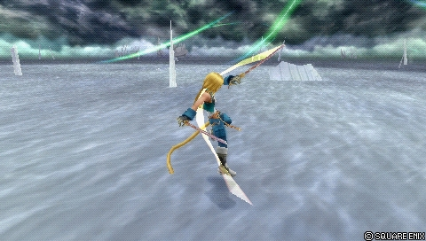
Le vrai enchaînement BRV vers HP de Zidane au sol, surtout utilisé en punish à courte portée et comme démarreur de combos assist (le plus souvent via le HP link Meo Twister), avec des dégâts de base au-dessus de sa moyenne. Attention : malgré un startup rapide, l'animation complète est longue et se déroule même dans le vide, ce qui l'expose aux blocks et aux whiff punish ; le tracking est faible et Zidane finit toujours en l'air. Ce n'est pas un poke sûr en neutral : les 30 de dégâts de base ne compensent pas le risque.
| Dégâts de base | 30 (2, 3, 4, 6, 2 x 3, 9) |
|---|---|
| Startup | 19F |
| Type | Physical |
| Priorité | Melee Low |
| EX Force | 90 |
| Effets | Chase |
| Cancels | Dodge |
| CP (maîtrisé) | 30 (15) |
Scoop Art (ground) Ranged Low
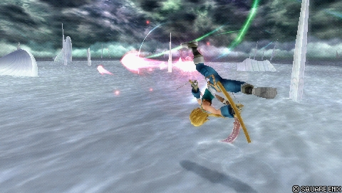
Outil de zoning passif utilisé de loin pour chercher des opportunités de combo : jusqu'à deux tirs supplémentaires en rappuyant, bon tracking vertical, hit stun correct et recovery courte. Deux tirs qui touchent se confirment en combo via dodge cancel ou assist, et les tirs peuvent être retardés. Priorité Ranged Low et vitesse lente : perd contre le dash et la mêlée, inefficace contre le rushdown ; la version sol est peu utilisée car Zidane est plus fort en l'air.
| Dégâts de base | each 5 |
|---|---|
| Startup | 37F |
| Type | Magical |
| Priorité | Ranged Low |
| EX Force | 0 |
| Cancels | Dodge |
| CP (maîtrisé) | 30 (15) |
Booster 8 Melee Mid
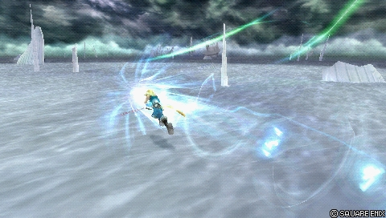
La bravery au sol principale de Zidane : gap closer et démarreur de combo dont la priorité Melee Mid force le respect des blocks. Sur hit, la recovery s'annule en n'importe quelle attaque aérienne équipée, ce qui permet de combotter en HP ou HP link (Swift Attack et Free Energy sont des suites fiables). Startup assez lent pour être réactable, tracking vertical très faible, trajectoire linéaire ; sur simple stagger, pas d'annulation possible.
| Dégâts de base | 17 (3 x 4, 5) |
|---|---|
| Startup | 31F |
| Type | Physical |
| Priorité | Melee Mid |
| EX Force | 30 |
| Cancels | Dodge, Attack (On Hit) |
| CP (maîtrisé) | 30 (15) |
En l’air
Storm Impulse Melee Low
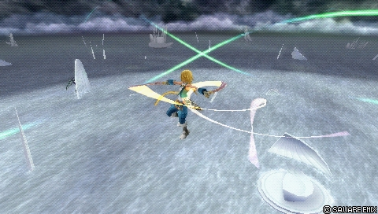
Bravery secondaire de punish avec la plus longue portée latérale de ses attaques de mêlée aériennes, l'une de ses deux braveries à Wall Rush, et un lancement initial qui combote en assist à midscreen. Peu utilisée en compétition : rendement décroissant pour le risque pris, startup rapide seulement à bout portant, spin qui continue même dans le vide (facile à bloquer de loin) et besoin du Wall Rush pour vraiment rentabiliser ses dégâts.
| Dégâts de base | 40 (4 x 3, 8, 1 x 5, 15) |
|---|---|
| Startup | 19F |
| Type | Physical |
| Priorité | Melee Low |
| EX Force | 90 |
| Effets | Wall Rush |
| Cancels | Dodge |
| CP (maîtrisé) | 30 (15) |
Vortex Melee Low
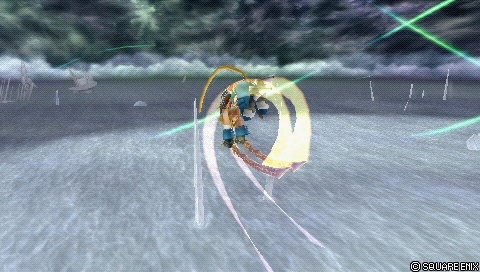
Bravery secondaire servant à whiff punir depuis un angle relativement sûr, par en dessous, après une esquive d'un coup à longue recovery. Peut démarrer des combos assist (Wall Rush nécessaire si l'attaque va au bout) et sert aussi à remplir la jauge d'assist sur whiff en jeu passif. Montée lente et télégraphiée, facile à bloquer pendant les spins, touche mal les adversaires en face à cause de l'angle : à utiliser avec parcimonie.
| Dégâts de base | 35 (2 x 3, 9, 1 x 5, 15) |
|---|---|
| Startup | 23F |
| Type | Physical |
| Priorité | Melee Low |
| EX Force | 30 |
| Effets | Wall Rush |
| Cancels | Dodge |
| CP (maîtrisé) | 30 (15) |
Tempest Melee Low
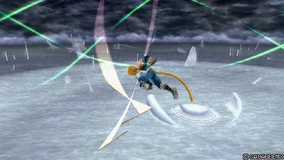
Lancer de dague vers le bas, utile pour attaquer par au-dessus. C'est le HP link descendant de Zidane (branche Meo Twister B) : démarreur de combos assist à gros dégâts, avec plus de dégâts de base que Swift Attack, et bon punish aérien d'après la section builds.
| Dégâts de base | 35 (2 x 6, 8, 2 x 3, 9) |
|---|---|
| Startup | 19F |
| Type | Physical |
| Priorité | Melee Low |
| EX Force | 30 |
| Effets | Chase |
| Cancels | Dodge |
| CP (maîtrisé) | 30 (15) |
Scoop Art (midair) Ranged Low
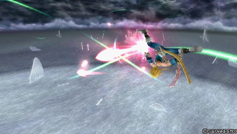
Version aérienne du projectile : fonctionnement identique à la version sol, mais avec une meilleure synergie avec le reste du kit aérien de Zidane. En build, elle sert surtout à construire la jauge d'assist et peut convertir en combo assist à la volée si deux tirs ou plus touchent ; un usage trop fréquent expose au dash > poke adverse.
| Dégâts de base | each 5 |
|---|---|
| Startup | 37F |
| Type | Magical |
| Priorité | Ranged Low |
| EX Force | 0 |
| Cancels | Dodge |
| CP (maîtrisé) | 30 (15) |
Solution 9 Ranged Low
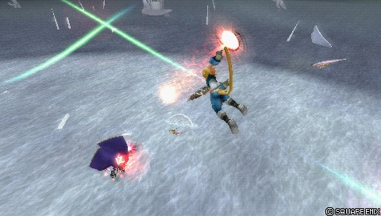
Projectile longue portée qui lance de multiples tirs d'énergie, peu précis mais nombreux. Aucune note d'usage compétitif n'est documentée pour ce coup.
| Dégâts de base | each 7 |
|---|---|
| Startup | 53F |
| Type | Magical |
| Priorité | Ranged Low |
| EX Force | 0 |
| Cancels | Dodge |
| CP (maîtrisé) | 30 (15) |
Swift Attack Melee Low
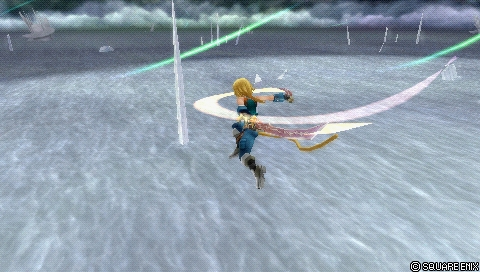
Coups de lame rapides à bout portant : la bravery la plus rapide de Zidane (13F), faible en dégâts mais au lancement très vif, avec 90 d'EX Force. C'est son poke aérien de référence, son HP link principal (branche Meo Twister C) et son démarreur de combos assist à gros dégâts d'après l'overview et la section builds.
| Dégâts de base | 20 (2, 3, 2 x 3, 9) |
|---|---|
| Startup | 13F |
| Type | Physical |
| Priorité | Melee Low |
| EX Force | 90 |
| Effets | Chase |
| CP (maîtrisé) | 30 (15) |
Attaques HP
Au sol
Tidal Flame Melee High (close) Ranged High (projectile)
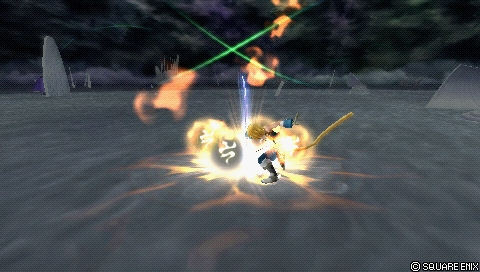
Projectile de flamme rasant à homing rapide, qui apporte du contrôle d'espace au sol d'après l'overview, au prix d'un startup relativement long (49F). C'est aussi l'un de ses deux moyens de HP en un coup.
| Dégâts de base | 15 (close) |
|---|---|
| Startup | 49F |
| Type | Physical |
| Priorité | Melee High (close) Ranged High (projectile) |
| EX Force | 30 + 60 |
| Cancels | Dodge |
| CP (maîtrisé) | 30 (15) |
Stellar Circle 5 Melee High
Cyclone à courte portée qui offre une couverture autour de Zidane, avec effet Absorb. Aucune note d'usage compétitif n'est documentée pour ce coup.
| Dégâts de base | 9 (1 x 9) |
|---|---|
| Startup | 43F |
| Type | Magical |
| Priorité | Melee High |
| EX Force | 87 |
| Effets | Absorb |
| Cancels | Dodge |
| CP (maîtrisé) | 30 (15) |
Meo Twister A Unblockable (?)
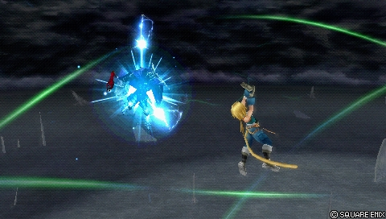
Laser tiré en branche de Rumble Rush : c'est le HP link au sol de Zidane, au cœur de ses combos assist d'après l'overview.
| Dégâts de base | +10 (1 x 10) |
|---|---|
| Startup | ? |
| Type | Magical |
| Priorité | Unblockable (?) |
| EX Force | 0 |
| Cancels | Dodge |
| CP (maîtrisé) | 30 (15) |
En l’air
Shift Break Ranged High (thunder) Unblockable (water)
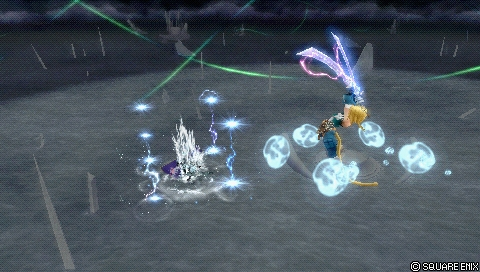
HP longue portée mêlant colonnes d'eau (imblocables) et éclairs pour déstabiliser l'adversaire. L'overview en fait, avec Meo Twister, l'un des piliers des setups de Zidane pour monter la jauge d'assist et convertir en gros dégâts ; en build, il est équipé en HP aérien bas.
| Dégâts de base | each 5 |
|---|---|
| Startup | 27F (first thunder) 87F (water) |
| Type | Magical |
| Priorité | Ranged High (thunder) Unblockable (water) |
| EX Force | 60 + 9 x N |
| Effets | Absorb |
| Cancels | Dodge |
| CP (maîtrisé) | 30 (15) |
Grand Lethal Melee High
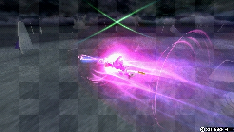
Charge d'énergie à portée verticale limitée mais longue durée, avec Wall Rush. Aucune note d'usage compétitif n'est documentée pour ce coup.
| Dégâts de base | 21 (7 x 3) |
|---|---|
| Startup | 53F |
| Type | Physical |
| Priorité | Melee High |
| EX Force | 27 |
| Effets | Wall Rush |
| Cancels | Dodge |
| CP (maîtrisé) | 30 (15) |
Free Energy Ranged High
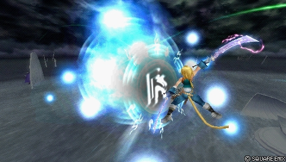
Vague d'énergie à courte portée et exécution rapide : le HP le plus rapide de Zidane (25F), HP en un coup, et suite fiable après Booster 8 d'après les notes de ce dernier.
| Startup | 25F |
|---|---|
| Priorité | Ranged High |
| EX Force | 60 |
| Cancels | Dodge |
| CP (maîtrisé) | 30 (15) |
Meo Twister B Unblockable (?)
Branche de Tempest, identique à Meo Twister A.
| Dégâts de base | +10 (1 x 10) |
|---|---|
| Startup | ? |
| Type | Magical |
| Priorité | Unblockable (?) |
| EX Force | 0 |
| Cancels | Dodge |
| CP (maîtrisé) | 30 (15) |
Meo Twister C Unblockable (?)
Branche de Swift Attack, identique à Meo Twister A.
| Dégâts de base | +10 (1 x 10) |
|---|---|
| Startup | ? |
| Type | Magical |
| Priorité | Unblockable (?) |
| EX Force | 0 |
| Cancels | Dodge |
| CP (maîtrisé) | 30 (15) |
EX Mode: Trance! & EX Burst
L'EX Mode de Zidane, « Trance! », confère Regen, Critical Boost, Aerial Jump et Dodge Jump. Aerial Jump ajoute +10 sauts aériens (le compteur se réinitialise après une esquive) et Double Jump donne de l'invincibilité pendant la phase montante du saut — sans déclencher l'effet Bravery Boost on Dodge, car ce n'est pas compté comme une esquive.
Malgré ces bonus universels solides, cet EX Mode est peu rentable pour Zidane en compétition : sa génération d'EX n'est que moyenne et largement surclassée par ses builds Side by Side, il est souvent loin de l'EX quand il utilise ses coups clés, ses sauts aériens lui suffisent déjà en footsies, et les sauts supplémentaires sont rarement pertinents dans les situations où l'on active l'EX Mode (sécuriser un combo assist ou une victoire). Il peut encore créer des situations de checkmate, mais remplir une jauge EX complète va à l'encontre de ses builds Side by Side orientés dégâts.
EX Burst : Reverse Gaia demande de marteler Cercle à un rythme modéré pour remplir quatre sections de jauge (2, 3, 3 puis 4 attaques par section) ; si une jauge n'est pas remplie à la fin d'une section, Zidane passe directement au coup final. C'est l'un des EX Bursts les moins puissants du jeu, la faute à des dégâts de base assez bas et au faible ATK de base de Zidane.
Mécanique unique
Plan de jeu & techniques avancées
La boucle de jeu de Zidane est aérienne et centrée sur les ressources d'assist : poker avec Swift Attack (à bout portant) et Scoop Art (de loin) pour occuper l'espace et remplir la jauge, puis convertir une touche en combo assist via les HP links. Le plan des builds de référence est explicite : toucher avec Swift Attack > Meo Twister ou avec Shift Break, puis étendre le combo assist au maximum — plus de 6000 dégâts HP sont possibles avec deux jauges, sans même avoir besoin du Wall Rush.
Au sol, Booster 8 sert de gap closer et de démarreur : sur hit, il s'annule en n'importe quelle attaque aérienne (Swift Attack, Free Energy), ce qui ramène Zidane dans son plan aérien. Tidal Flame apporte du contrôle d'espace et Booster 8 peut contrer les blocks grâce à sa priorité Melee Mid, mais les deux sont lents : le jeu au sol reste un engagement à limiter.
Zidane est aussi à l'aise près des murs et plafonds, où son wall carry au-dessus de la moyenne et ses HP links garantissent la conversion. Quand il n'a pas l'avantage, il peut prendre son temps en défense et frapper sur une ouverture claire. L'EX est secondaire dans son plan : ses combos assist rapportent plus que son gain d'EX, d'où la priorité donnée aux accessoires de jauge d'assist (Together As One) et à la bravery de base (Hero's Seal, Bravery Orb) dans ses builds.
Techniques spécifiques
Booster 8 kara cancel into EX Mode
Avec une jauge EX pleine, Zidane peut kara cancel Booster 8 en activation d'EX Mode sur hit, ce qui lui permet ensuite de sauter et de combotter en Tempest pour davantage de dégâts bravery.
Scoop Art double shot confirm
Tirer deux projectiles de Scoop Art pour confirmer un combo via dodge cancel ou appel d'assist ; les tirs supplémentaires peuvent être retardés pour confirmer ou simplement ajouter de la présence sur le terrain.
Techniques universelles (blodge, dash feint, lock off, dodge punishment) : voir la page Techniques & glitches.
Matchups
La page matchups du wiki est un stub : aucune analyse détaillée par personnage n'est disponible. L'overview donne néanmoins quelques repères : Zidane est efficace à bout portant (Swift Attack) ou à longue portée (Scoop Art, Shift Break), mais il a du mal à appliquer des mixups sur les blocks à distance. Lui-même difficile à whiff punir, il peine en revanche à créer de l'offense contre les personnages à forte area denial, The Emperor étant cité en exemple. Ses suites de HP links étant vulnérables aux contres par Assist Change, il peut aussi souffrir contre des adversaires qui gardent souvent de la jauge d'assist en réserve.
Vidéos de matchs : Replay Theater — matchs de Zidane Tribal.
Builds
Zidane est un HP linker qui s'appuie sur les combos assist pour ses gros dégâts. Sa génération d'EX comparativement faible, ses dégâts de base bas et son manque de coups Wall Rush fiables orientent ses builds vers Side by Side et la montée de la bravery de base : avec deux barres d'assist, il dépasse les 6000 dégâts HP sans Wall Rush.
Le build de référence « Side by Side (High Base BRV) » (450 CP, avec Equip Glitch) tourne autour de l'assist Aerith : Piggy's Stick, Chainsaw, Royal Crown, Auto Crossbow, et une batterie d'accessoires (Together As One pour démarrer avec de la jauge d'assist, Hero's Seal qui porte la bravery initiale au-dessus de 2000, Bravery Orb pour remonter plus vite à la bravery de base pendant les combos, plus les boosters Empty EX Gauge, Summon Unused, Pre-EX Mode, Pre-EX Revenge, Dismay Shock, Battle Hammer, invocation Rubicante). Comme Zidane s'appuie sur la bravery de base, l'absence de coups critiques et son faible ATK n'affectent pas ses dégâts. Les PV max sont bas (8454) : c'est un build de type glass cannon, mais un seul combo assist Aerith dépasse 3000 dégâts HP à bravery de base, et plus encore avec les extensions double Aerith et Shift Break. Les 25 points de capacité restants peuvent aller dans Speed Boost+, Ground Dash ou Auto Assist Lock On.
Côté attaques, les staples recommandés quel que soit le matchup sont Booster 8 (gap closer Melee Mid qui combote en coups aériens), Swift Attack + Meo Twister (poke aérien de référence, HP link principal, démarreur de combo assist) et Tempest + Meo Twister (HP link descendant, plus de dégâts de base que Swift Attack, bon punish aérien). Scoop Art (midair) est classé flexible : projectile longue portée qui convertit en combo assist si deux tirs ou plus touchent, mais dont l'abus expose au dash > poke.
Side by Side (High Base BRV)
| Stats | |
|---|---|
| HP | 8454 |
| CP | 450 |
| BRV | 1533 |
| ATK | 175 |
| DEF | 182 |
| LUK | 60 |
| Max Booster | x3.5 |
| Equipment | |
|---|---|
| Assist | Aerith |
| Weapon | Piggy's Stick |
| Hand | Chainsaw |
| Head | Royal Crown |
| Body | Auto Crossbow |
| Accessory 1 | Bravery Orb |
| Accessory 2 | Dismay Shock |
| Accessory 3 | Battle Hammer |
| Accessory 4 | Empty EX Gauge |
| Accessory 5 | Summon Unused |
| Accessory 6 | Pre-EX Mode |
| Accessory 7 | Pre-EX Revenge |
| Accessory 8 | Hero's Seal |
| Accessory 9 | Together As One |
| Accessory 10 | Side by Side |
| Summon | Rubicante |
| Bravery attacks | |
|---|---|
| Ground | Aerial |
| Booster 8 | Swift Attack |
| Branch: Meo Twister C | |
| ↑+ Scoop Art | |
| ↓+ Tempest | |
| Branch: Meo Twister B | |
| HP attacks | |
| Ground | Aerial |
| Tidal Flame | Free Energy |
| ↑+ Grand Lethal | |
| ↓+ Shift Break |
Build Overview
Basic Abilities
| Actions |
|---|
| Ground Evasion |
| Midair Evasion |
| Ground Block |
| Midair Block |
| Aerial Recovery |
| Recovery Attack |
| Controlled Recovery |
| Wall Jump |
| Air Dash |
| Free Air Dash |
| Free Air Dash Boost |
| Assist Gauge Up Dash |
| Jump Boost++ |
| Jump Times Boost++ |
| Ground Evasion Boost |
| Midair Evasion Boost |
| Evasion Boost |
| Descent Speed Boost |
| Support |
|---|
| Always Target Indicator |
| EX Core Lock On |
| Assist Lock On |
| Extra |
|---|
| Precision Jump |
| Precision Evasion |
| Disable Sneak Attack |
| EXP to Assist |
| Best Dresser |
| CP |
|---|
| 425 / 450 |
Point Allocation
Substitutes
| Equipment / Ability | Substitute | Notes |
|---|---|---|
| Summon Unused | Aerial | A stronger x1.5 booster if ground is not available or deemed necessary. |
| Tidal Flame | Speed Boost++ | Speed Boost++ helps Zidane move faster on the ground and in the air. If Tidal Flame is not deemed necessary, this can help in footsies. |
Attacks (Staple)
Attacks (Flexible)
Substitutions documentées : Summon Unused peut céder sa place à Aerial (booster x1.5 plus fort si le sol n'est pas nécessaire), et Tidal Flame peut être remplacé par Speed Boost++ pour accélérer Zidane au sol et en l'air si le contrôle d'espace n'est pas jugé indispensable.
Synergies d'assist
Zidane Tribal en tant qu'assist
En tant qu'assist, Zidane est classé dans le tier Mid de la tier list assist (classement de Muggshotter). Les données du wiki ne fournissent aucune analyse détaillée de ses coups d'assist.
Assists recommandées
- Aerith — Citée dans la section assist du wiki et assist du build de référence : un seul combo assist Aerith dépasse 3000 dégâts HP à bravery de base, davantage avec les extensions double Aerith et Shift Break.
- Kuja — Cité par le wiki parmi les assists avec lesquels Zidane fonctionne bien, sans détail supplémentaire dans les sources.
- Sephiroth — Cité par le wiki parmi les assists avec lesquels Zidane fonctionne bien, sans détail supplémentaire dans les sources.
Tech communautaire
Dissidia 012 Duodecim Final Fantasy Zidane Combo Montage 2011
Montage de combos d'époque (Andyz5448) : recueil de routes solo et avec assist de Zidane, de la même série que ses montages Squall et Cecil.
Dissidia 012 Duodecim Zidane Pure Assist Exp to Bravery Build 2011
Vidéo de build d'époque (Tiger Bub) : configuration full assist Exp to Bravery avec Fragile Pride, Assist Critical Boost, Sneak Attack et Counterattack/Riposte.
Sources
- https://dissidia.wiki/Zidane_Tribal_(Dissidia_012)
- https://www.youtube.com/watch?v=iU9bOdVEx-E
- https://www.youtube.com/watch?v=dhWYc7PstTI
- https://dissidia.wiki/Tier_List_(Dissidia_012)
- https://dissidia.wiki/Tier_List_(Assist)
Limites connues
- Page matchups du wiki à l'état de stub : aucune analyse par personnage.
- Section combos vide dans les sources : aucune route de combo documentée.
- Pas de notes d'usage détaillées pour Solution 9, Stellar Circle 5 et Grand Lethal (seule la description du jeu est disponible) ; Tidal Flame, Swift Attack, Tempest, Shift Break et Free Energy ne sont documentés qu'indirectement via l'overview et la section builds.
- Section assist quasi vide : une seule phrase de synergies, et aucune donnée sur les coups de Zidane en tant qu'assist.
- Aucune référence communautaire (vidéos, liens datés) listée dans les sources.
- Pas de mécanique unique documentée pour ce personnage.
- Le tableau Forces/Faiblesses du wiki est vide et le champ assist gain des coups n'est pas renseigné.